The right desk setup isn't about picking a style first.
It's about matching the configuration to the actual work. Someone running two monitors needs a different footprint than someone who stands half the day.
These 17 setups are organized around that idea: function first, look second.

1. Built From What's Already Working
The best configuration isn't always the newest one on a list like this.
Sometimes it's whatever setup is already in place, with one or two small adjustments.
A desk that gets used every day beats a perfectly styled one that doesn't. Starting with what's already working, then building from there, tends to go further than starting over.
2. Built With a Few Personal Touches
A photo, a favorite mug, a small memento, these make a desk feel like it actually belongs to someone specific.
A sterile desk rarely inspires anyone to actually sit down at it.
Keeping the personal items to a handful avoids tipping into clutter. These small additions do a lot for motivation on an ordinary Tuesday.
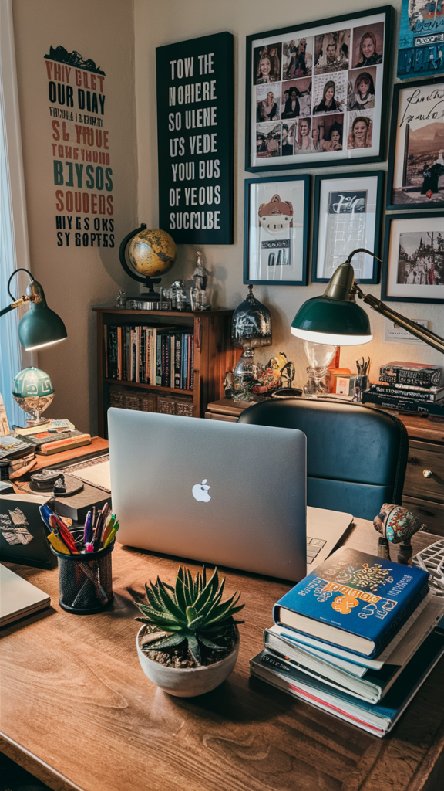
3. Built With a Creative Edge
A desk doesn't have to look buttoned-up to be functional.
Mismatched art, an unconventional desk shape, or an unexpected color combination all bring real personality to the space.
This suits anyone in a creative field who wants the workspace to reflect that. A setup that looks a little unconventional often makes the work itself feel less routine too.
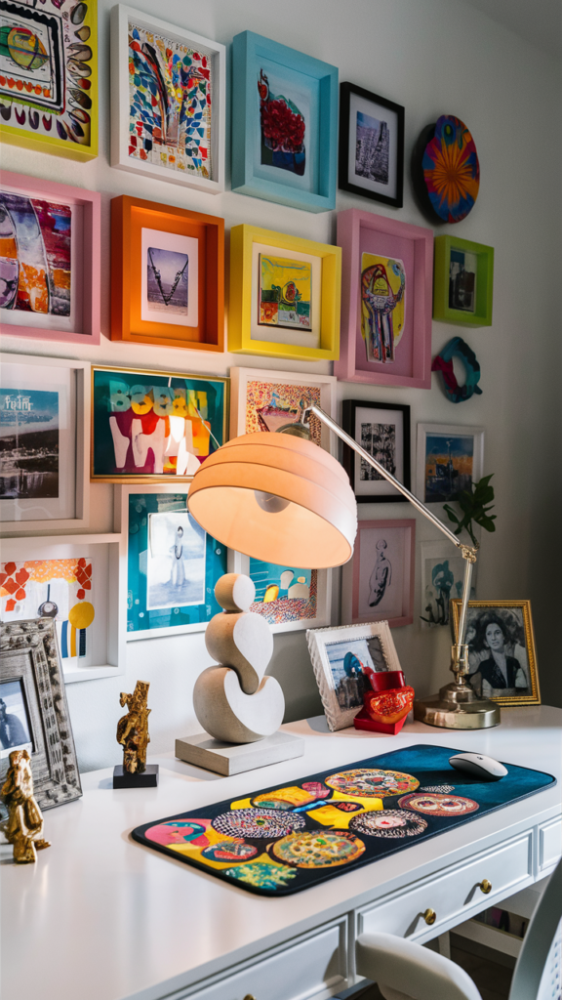
4. Built With Energy in Mind
Not every desk setup needs to be calm and muted.
A bold accent wall or a few vibrant accessories can genuinely lift mood through a long workday.
This suits anyone whose best work comes from energy rather than quiet focus. One or two strong color choices go further than filling the whole room with pattern.
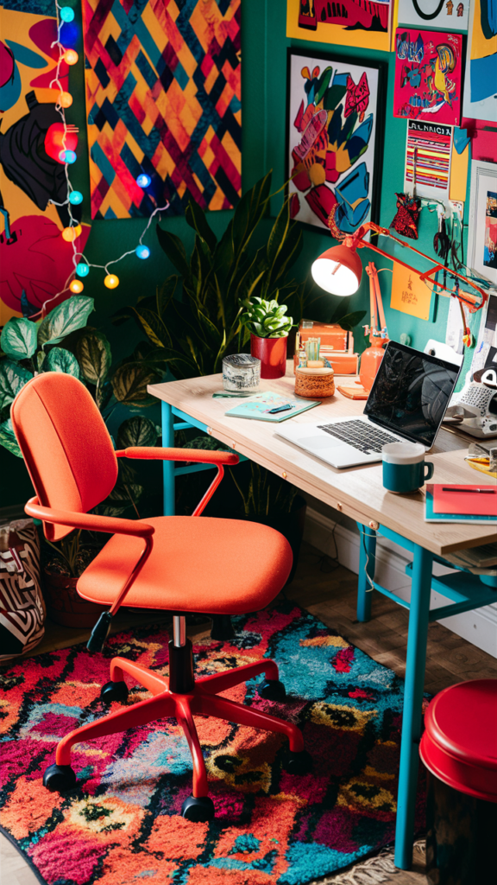
5. Built to Stay Timeless
A neutral desk setup skips trend-chasing almost entirely.
Soft whites, warm beiges, and light woods make up most of the palette.
This kind of setup won't need a redo in a year or two the way a trend-driven one might. It's a safe, steady choice for anyone who'd rather not think about redecorating often.
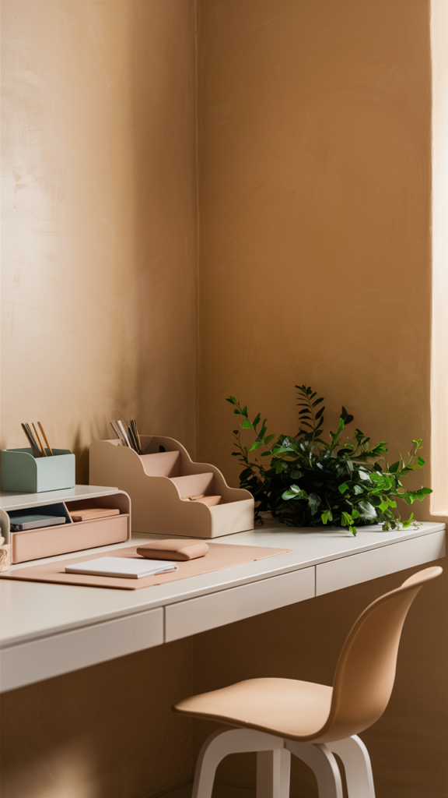
6. Built in One Consistent Tone
A monochrome desk setup, one color family across the desk, chair, and accessories, reads as deliberate rather than accidental.
Varying textures within that single tone keeps it from feeling flat.
This works especially well in a small space, where fewer competing colors make the room feel calmer. It's a low-maintenance look that doesn't date quickly either.
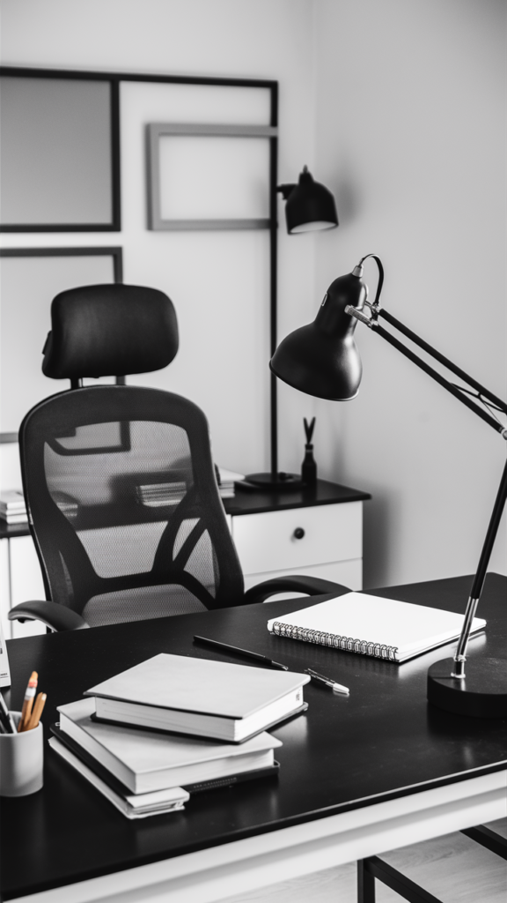
7. Built on Raw, Honest Materials
Exposed brick, black metal, and reclaimed wood all bring real texture to a desk setup.
This suits anyone who wants the room to feel a little more rugged than polished.
Industrial pendant lighting and metal shelving round out the look without much extra effort. It photographs well, but it also just holds up to daily use.
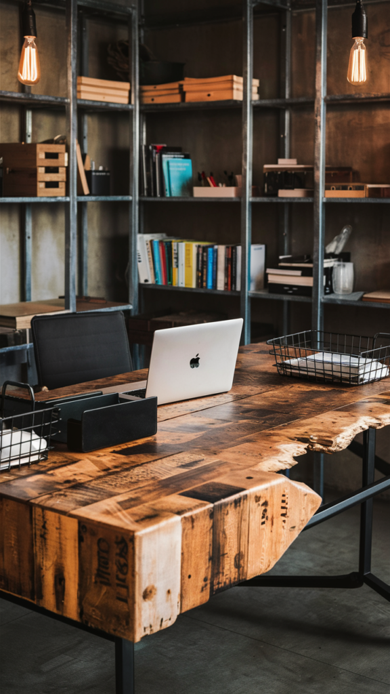
8. Built Around a Library Wall
Floor-to-ceiling shelving behind the desk turns a workspace into something closer to a study.
Books double as both reference material and visual texture.
A rolling ladder is a nice touch for taller shelving, though not a requirement. This setup rewards anyone who does a lot of reading or research as part of the job.
9. Built for Long, Comfortable Sessions
Some work calls for a setup that feels more like a reading nook than an office.
A soft throw, a warm lamp, and a chair with real cushioning all make a multi-hour session easier to sit through.
This suits anyone doing deep, focused work that doesn't move fast. Comfort here isn't a luxury add-on, it's what keeps the setup usable for the long stretch.
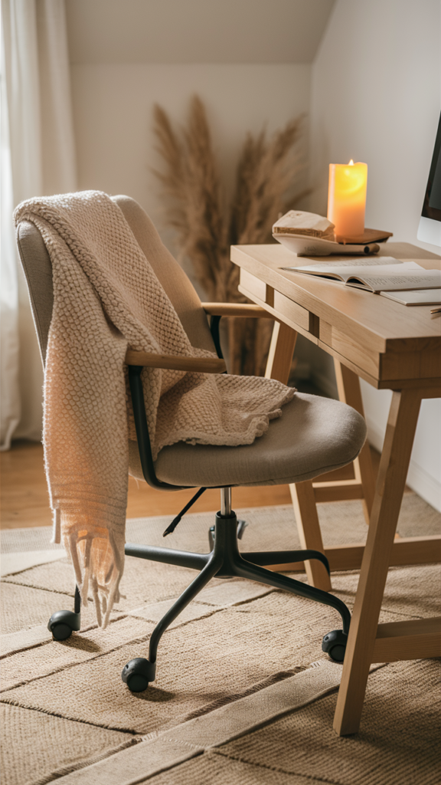
10. Built to Keep the Tech Out of Sight
A desk doesn't have to look like a server room to be fully wired.
Cable trays, wireless chargers, and a dock for a one-cable laptop hookup keep the tech functional without it taking over visually.
Smart lighting and a voice-controlled speaker add convenience without adding clutter. The goal is a setup that works hard without looking like it's trying to.
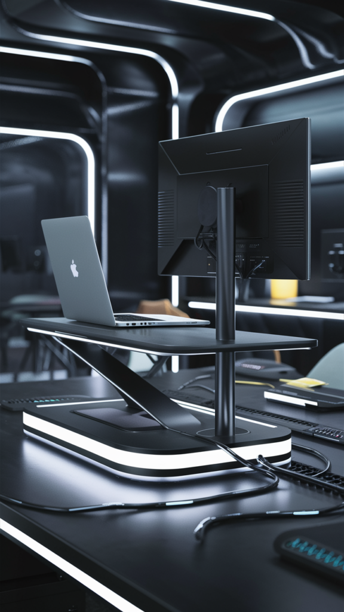
11. Built With Nature Close By
A desk near a window, with a few real or faux plants nearby, changes the whole feel of a workday.
Natural light reduces eye strain in a way no desk lamp fully replicates.
Wood tones and woven textures round out the feel without turning the space precious. A view of something green, even a small one, makes long stretches at a desk easier to sit through.
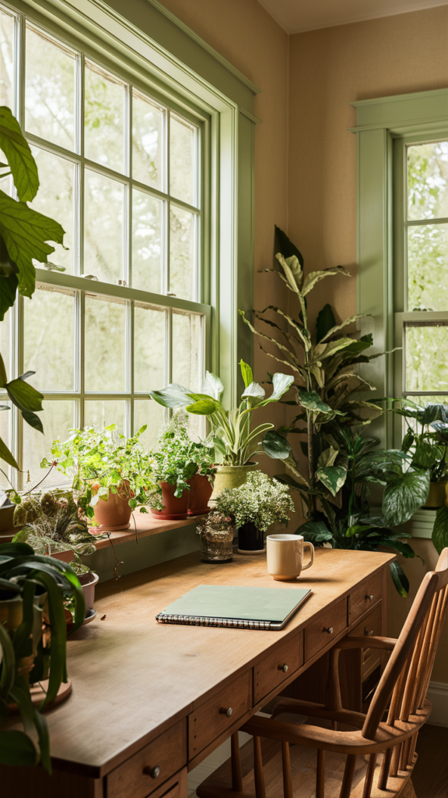
12. Built to Disappear Into the Wall
A floating desk mounted directly to the wall skips the bulk of a traditional desk entirely.
No legs underneath means the floor stays open and the room feels less crowded.
This works especially well in a small bedroom or a shared living space. Floating shelves above the desk pick up the storage a drawer unit would normally handle.
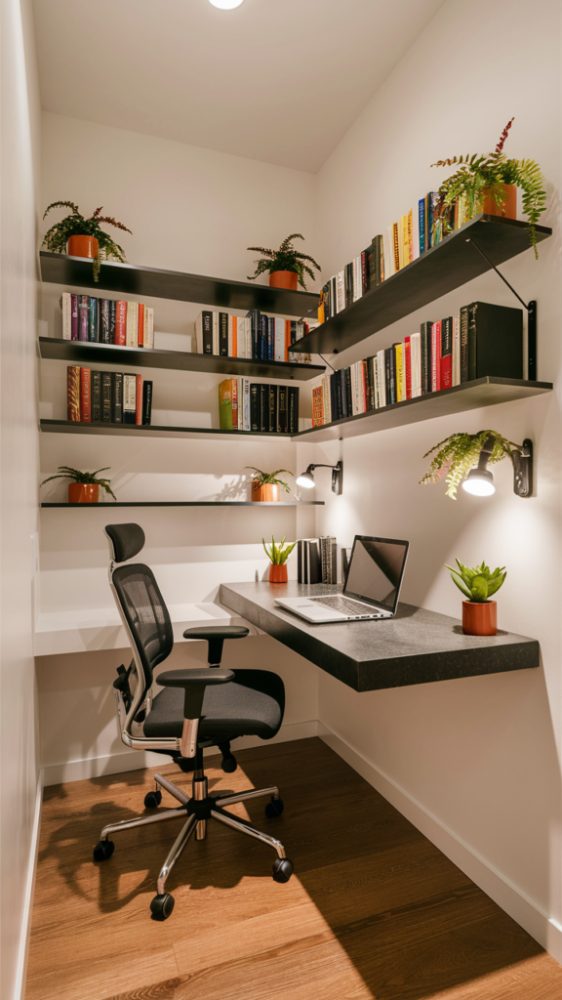
13. Built for a Side Hobby
A desk doesn't always need to be about work emails and spreadsheets.
A corner set up for painting, sewing, journaling, or another hobby deserves its own dedicated surface.
Bins and trays keep supplies contained without turning the space into visual clutter. Having a spot that's purely for a hobby, separate from work, makes it easier to actually use it.
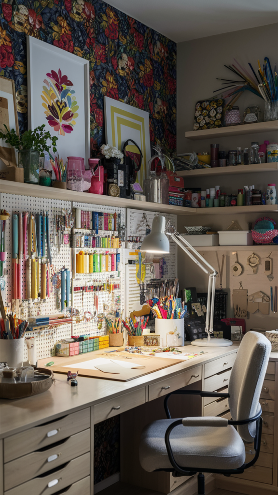
14. Built for a Tight Footprint
Not every home has a spare room for a desk.
A compact corner desk or a wall-mounted fold-down version works in a space that can't spare much square footage.
Vertical storage picks up the slack that floor space can't provide. A small footprint doesn't have to mean a cramped or unpleasant one.
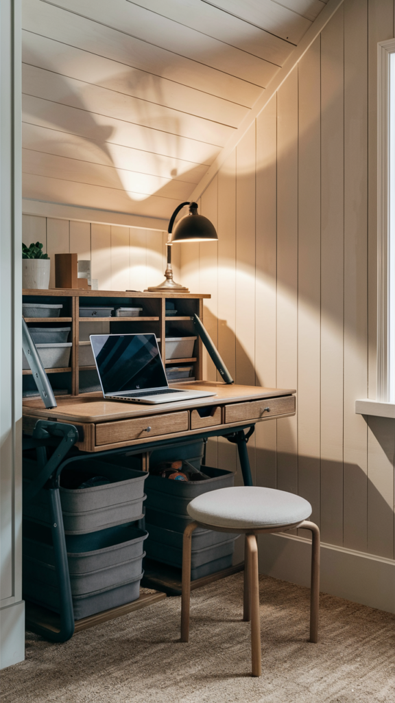
15. Built to Move
Sitting all day isn't a requirement anymore.
A standing desk converter or a full sit-stand desk lets the body switch positions through the day.
An anti-fatigue mat makes standing sessions last longer without the discomfort. Switching postures every hour or so does more for energy than caffeine does.
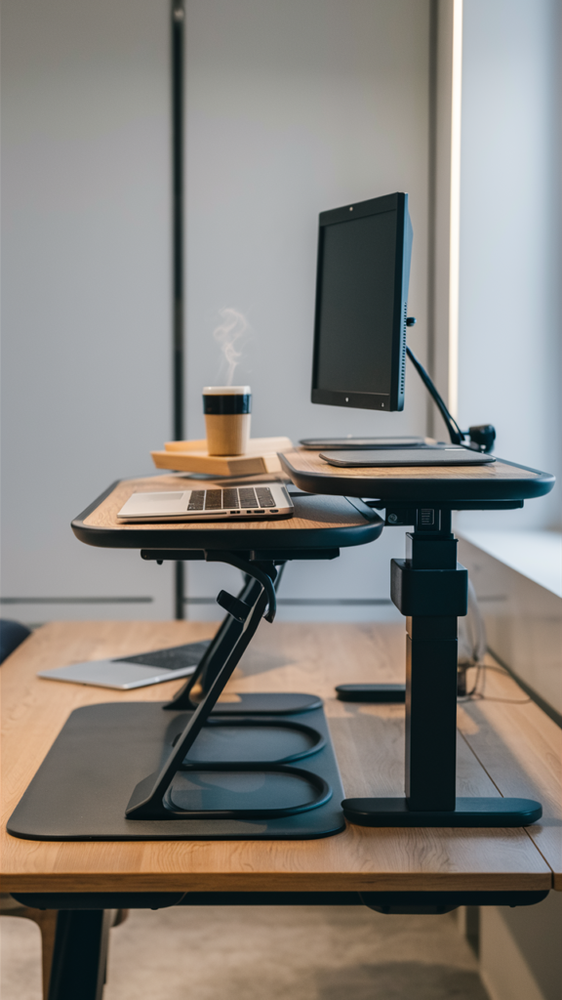
16. Built Around Ergonomics First
Comfort isn't a finishing touch here, it's the actual starting point.
An adjustable chair with real lumbar support changes how the whole day feels.
Monitor height at eye level, keyboard and mouse at elbow height, feet flat on the floor or a footrest. Every other choice in the room gets built around getting those basics right.
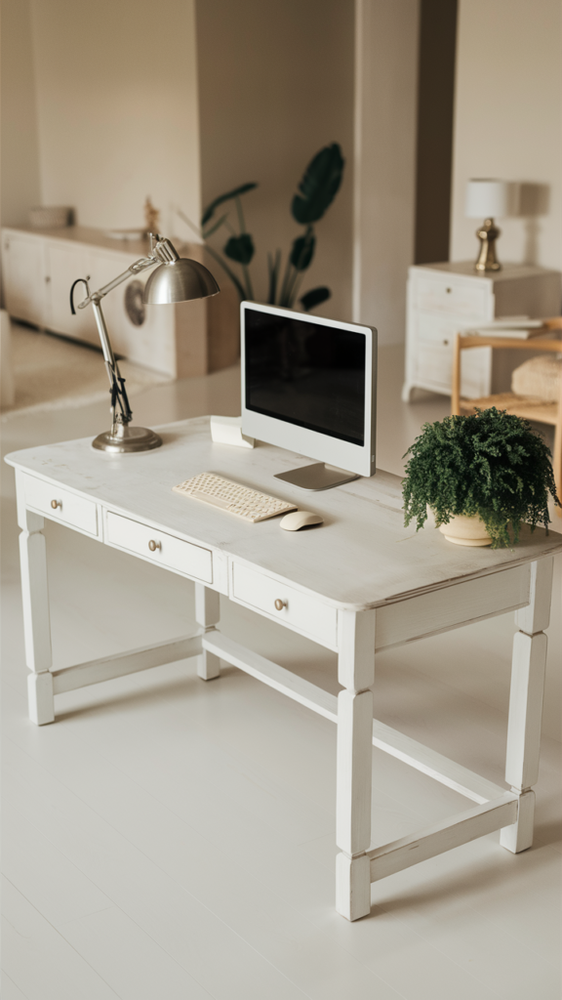
17. Built for Dual Monitors
Two screens change everything about how a desk needs to be laid out.
Width matters more than depth here. A wide, shallow desk keeps both monitors in easy reach.
Monitor arms free up the actual desk surface for everything else. Centering the keyboard between the two screens, not under either one, keeps posture neutral through long sessions.
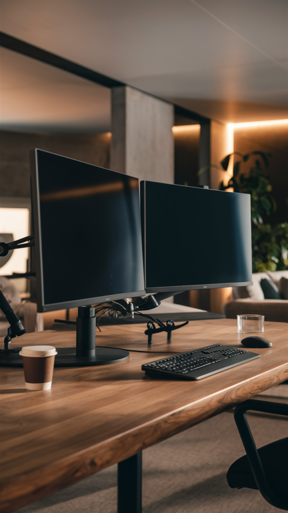
Final Thoughts
None of these 17 configurations require starting from a blank room.
Most of them are a handful of changes away from whatever setup already exists.
Pick the one that matches how the work actually gets done, not just how the photos look. The right desk setup is the one that gets used every single day.